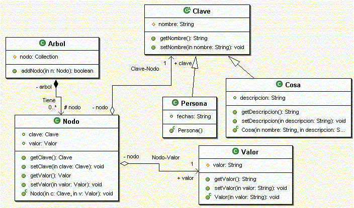

Ejercicios de colecciones
Esquema UML
Vamos a escribir el esqueleto (nombre de la clase, campos y nombre de los métodos) que podría tener una aplicación Java con el siguiente esquema:

Se pide:
a) Crear todas estas clases en un paquete es.ua.jtech.jhd.sesion05.arbol, dentro del proyecto creado para los ejercicios de la sesión (jhd-sesion05). En principio crearemos únicamente las clases y sus campos (dejaremos los constructores y los métodos para los siguientes puntos).
b) Utilizar Eclipse para generar automáticamente los constructores necesarios.
c) Utilizar Eclipse para generar automáticamente los getters y setters que figuran en el diagrama.
d) Modificar la clase Arbol para que la lista de nodos utilice genéricos.
e) Vamos a utilizar el patrón factoría para instanciar las claves. Crearemos una FactoriaClave que nos devuelva instancias de dicha clase proporcionando un nombre. Si el nombre que proporcionamos empieza por mayúscula se entenderá que es un nombre propio, y por lo tanto una persona. En caso contrario, entenderemos que es una cosa. ¿Cómo podríamos evitar que desde el resto del código de la aplicación (suponemos que estará en paquetes distintos) se puedan instanciar las clases Cosa y Persona sin pasar por la factoría?
f) Añadir a la clase Clave un método abstracto getTipo que nos devuelva un String indicando el tipo de clave que es: "cosa" o "persona".
g) Introducir en la clase Arbol el código para instanciar la lista de nodos como un objeto ArrayList, y el código del método addNodo. Añadir además un método getNodos para obtener la lista ordenada de Nodos. Utilizar para ello los algoritmos que tenemos disponibles en el marco de colecciones.
h) Crear un programa principal para utilizar esta librería de clases. Crearemos un Arbol al que añadiremos una serie de nodos. Obtener la lista ordenada de nodos e imprimirlos por la consola, con su nombre, tipo y valor.
Centro cultural
Un centro cultural se dedica al préstamo de dos tipos de materiales de préstamo: discos y libros. Para los dos se guarda información general, como su código identificativo, el título y el autor. En el caso de los libros, almacenamos también su número de páginas, y para los discos el nombre de la discográfica.
Al centro cultural acuden una serie de clientes (de los que se guarda su DNI y nombre), que realizan una serie de peticiones de discos o libros (como mucho hasta 5 peticiones). Para cada petición se guarda la fecha de inicio y fin del préstamo.
Se pide:
a) Escribir el esqueleto de las clases que estimes apropiadas para el supuesto planteado anteriormente. Crear todas estas clases en un paquete es.ua.jtech.jhd.sesion05.prestamos, dentro del proyecto creado para los ejercicios de la sesión. Genera automáticamente con Eclipse todos los componentes que sea posible.
b) Introducir en la clase correspondiente a los clientes el código para insertar nuevas peticiones, evitando que puedan producirse más de 5. Esta lista debe haberse instanciado previamente como un objeto de tipo ArrayList.
c) Crear un programa principal en el que se cree un cliente y se añadan una serie de peticiones. Comprobar que funciona correctamente.
d) Dado que la lista de peticiones siempre se recorre de forma iterativa (nunca se accede a un índice concreto directamente), y que sólo hacemos inserciones en uno de sus extremos, ¿qué tipo de datos crees que resultaría más eficiente para implementarla? Sustituye la implementación actual por la que resulte más adecuada. Volver a probar el código desarrollado en el punto anterior para comprobar que todo sigue funcionando correctamente.
Agencia inmobiliaria (*)
Una agencia inmobiliaria dispone de una serie de pisos en oferta. Estos pisos pueden ser viviendas de protección oficial, o pisos libres. En cualquier caso, se guarda la dirección del piso, el número de metros cuadrados, una descripción sobre su contenido y estado, y el precio. En el caso de viviendas libres, también almacenamos el porcentaje de beneficio que se lleva la inmobiliaria sobre su precio original. Deberemos poder obtener el precio final de las viviendas, en el que se contabilice este beneficio, si procede.
Los clientes que solicitan pisos a la inmobiliaria dejan su DNI y nombre, y por cada visita que soliciten, se almacena la fecha y hora de la visita, y la impresión del cliente sobre el piso.
Una vez se ha encontrado un piso adecuado, la propia inmobiliaria ofrece al cliente un préstamo hipotecario, en el que se indica la cantidad solicitada, si se dispone de aval o no (por defecto, no), el tipo de interés aplicado, y el período de tiempo por el que estará vigente la hipoteca, en años.
Escribir el esqueleto de las clases que estimes apropiadas para el supuesto planteado anteriormente. Crear todas estas clases en un paquete es.ua.jtech.jhd.sesion05.inmobiliaria, dentro del proyecto creado para los ejercicios de la sesión.